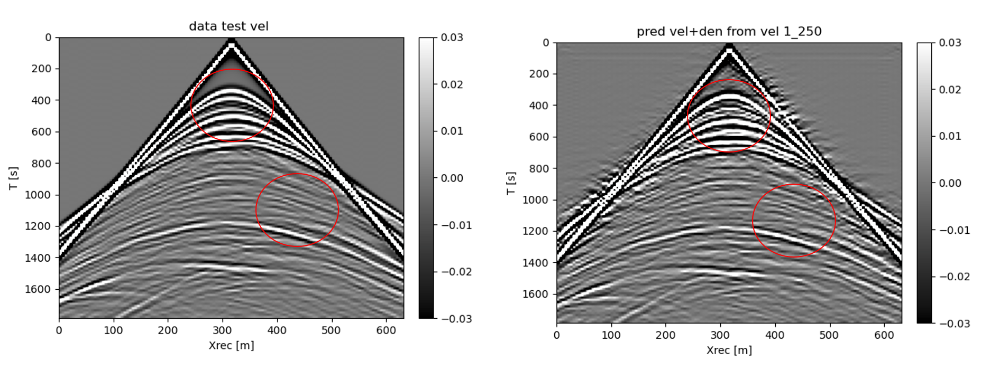

Domain transfer on Shot records
Domain transfer using Condtional normalizing flows on Shot records.
Felix J. Herrmann ![]()
code reproducible at here
\[ \newcommand{\pluseq}{\mathrel{+}=} \]
Objectives and scope
The primary objective would be to develop or adapt a method for transferring knowledge from acoustic shot records that contain density information to those that do not and vice versa. This involves understanding the underlying physics and how density variations affect acoustic responses. The scope includes collecting and preparing datasets of acoustic shot records, both with and without density information.
Method
This methodology delineates a sophisticated approach for the domain transfer from acoustic shot records possessing density information to those devoid of it and vice versa.
Data for the training phase is created by choosing slices of the BGCompass model and placing sources and receivers are the top. The source frequency is 25 Hz. The shot record created by the center source is chosen as the dataset. I used 3 sources and receivers are placed along the top of the model at each pixel. I use non linear modelling for better clarity and realism in the shot records
In the training phase, an alternating methodology is employed to diligently train both the discriminator and the generator. Notably, the adoption of a Conditional Normalizing Flow network as the generator is a strategic choice, motivated by its computational efficiency. Unlike conventional Generative Adversarial Networks (GANs) that are not invertible and require separate networks for each direction of transfer. The networks are trained using an adversarial loss(Dreher et al. 2023) and the generator is validated at each epoch. The shot records along with their condtions are use as inputs to the network. In this way the network learns to differentiate the shot records based on the conditions. During generation, we pass a shot record through the network indicating the domain it belongs to and ask the network to transfer this input to the other domain. In previous work, we needed two different GAN networks for the bidirectional map of the domains, we elimnate this by using a memory efficient conditional normaliziing flow network.

Results
We apply the proposed domain transfer approach to a previously unseen shot record. Results for the learned network on these test shot record are presented in Figures 1 and 2, respectively. For reference, the original shot data are included on the left, followed by the domain transferred shot record on the right. Figure 1 shows that the domain transferred shot record has dimmer events in the body and the waves are sligtly thinner as expected of a velocity only shot record. Figure 2 shows that the domain transferred shot record has brighter and sharper events compared to the test shot record, which is expected from the shot record which consists of velocity and density



Significance
The introduction of Conditional Normalizing Flow networks as a cornerstone technology underscores a strategic move towards computational efficiency and reduced processing times, making the handling of voluminous datasets more feasible. This not only paves the way for cost-effective exploration activities by obviating the need for expensive field measurements but also democratizes access to sophisticated subsurface exploration tools, thereby expanding the horizons of geophysical research.
This method can be applied to two domains which have a similar property, one of these domains can be expensive or quite hard to obtain whereas the other domain is readily avaiable. This method provides a bidirectional effective mapping between these domains. For example, we can map acoustic shot records to elastic and vice versa. Since elastic shot records are expensive to produce, by employing this method, we can produce elastic shot records from acoustic shot records.
Discussion and conclusions
We introduced Domain transfer method that provides high accuracy generative samples with low computational cost. We trained a conditional normalizing flow that learns the map between the two domains of interests.We showed that the generated images are consistent with the charactertics of the domain. We also showed that the computation cost of training and inference is low compared to previous work since we are utilizing one network for bidirectional mapping.(Yao, Guasch, and Warner 2023)
References
Acknowledgement
This research was carried out with the support of Georgia Research Alliance and partners of the ML4Seismic Center.